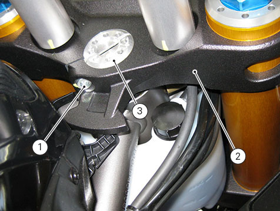
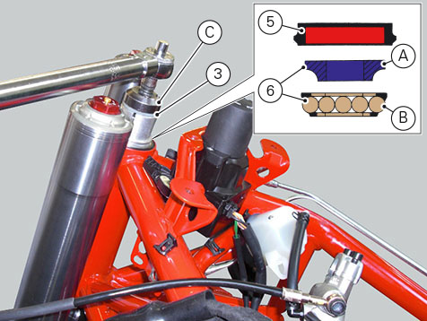
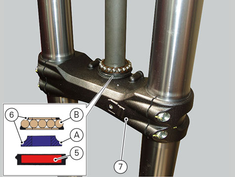
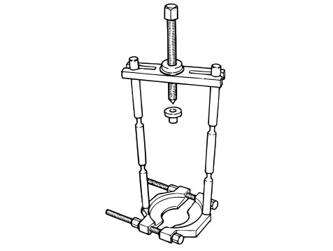

All parts fitted to the steering head and bottom yoke, including wiring and hoses, can remain on the motorcycle provided they
do not hinder the following operations.
Loosen the screw (1) securing the steering head (2) to the ring nut (3).
Remove the steering head (2).

With the service tool (C) no. 88713.1058 loosen the ring nut (3) and unscrew it from the steering shaft.
Slide the sealing ring (5), the inner ring (A) and the ball race (B) of the upper bearing (7) off the steering shaft.

Remove the bottom yoke (7) complete with the steering shaft from the frame tube.
Remove the ball race (B) of the lower bearing (6).
The inner race (A) of the lower bearing (6) and the relative seal (5) will remain on the steering shaft.

Using a universal puller (see figure), remove the inner ring (A) from the steering shaft, taking care not to damage the seat.

Important
The removed seals and bearings shall not be reused and must be renewed using similar components.
Using a suitable punch, remove the outer bearing races (8) from the steering tube. Proceed with extreme care to avoid damaging
the seats.